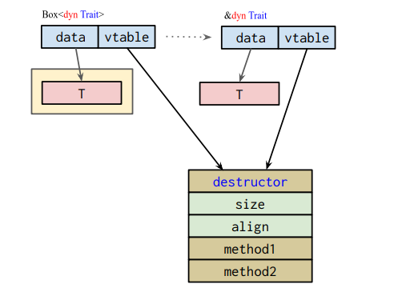
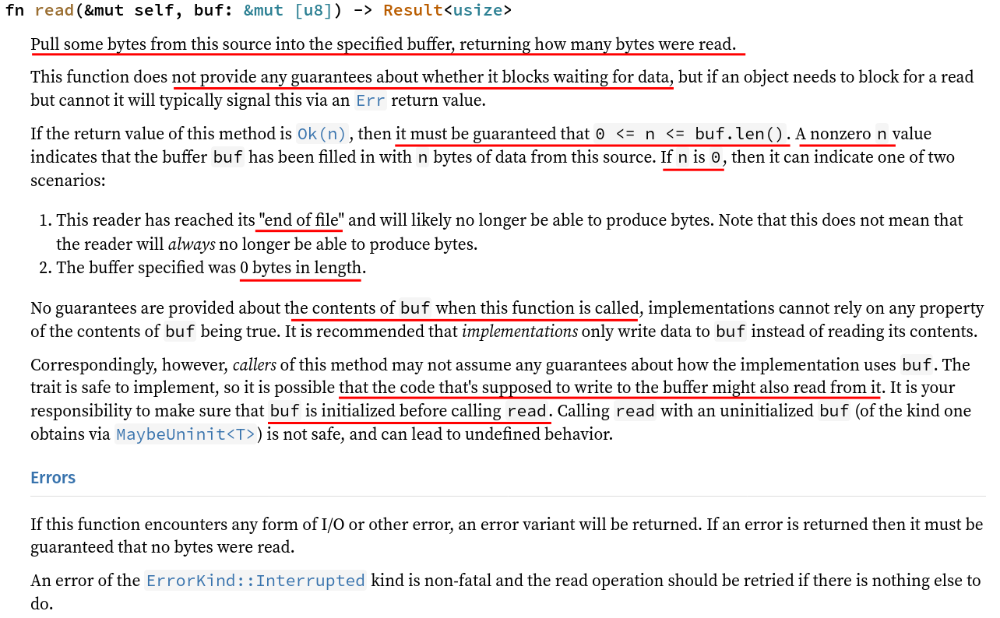

Taesoo Kim
Taesoo Kim
Given the benefits of traits in Rust, do traits have any disadvantages compared to interfaces or abstract classes?
How are objects in memory stored in Java or traditional OOP languages?
Does rust allow for inheritance like many OOP do?
What’s the difference between an implementation of Ord and PartialOrd, which implements comparisons between two items? My only thought is this: a rock-paper-scissors game, where the following comparisons do not provide a hierarchy: rock > scissors, scissors > paper, paper > rock and it goes in a circle Is this a proper example of PartialOrd but not Ord implementation?
Copy: copy semantics, a marker trait (e.g., #[derive(Copy)])Default: providing a default value (e.g., #[derive(Default)])AddAssign: overriding the += operationPoint#[derive(Default, Copy, Clone, Debug)]
struct Point<T>(T, T);
// Specializaion: implementing the AddAssign trait for types
// having the AddAssign trait
impl<T: AddAssign> AddAssign for Point<T> {
fn add_assign(&mut self, rhs: Self) {
self.0 += rhs.0;
self.1 += rhs.1;
}
}
dbg!(sum(&[Point(0.0, 0.0), Point(10.0, 10.0)]));00:0000│ rsi 0x555555587fb0 —▸ core::ptr::real_drop_in_place::hab7cd61d073ba88d
01:0008│ 0x555555587fb8 ◂— 0x8
02:0010│ 0x555555587fc0 ◂— 0x4
03:0018│ 0x555555587fc8 —▸ _$LT$test2..Point$LT$T1$C$T2$GT$$u20$as$u20$test2..Summary$GT$::summary::h9d4aca369fc4e289)
{:?} (often via #[derive(Debug)]){}Console)
Read